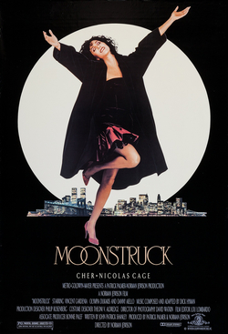
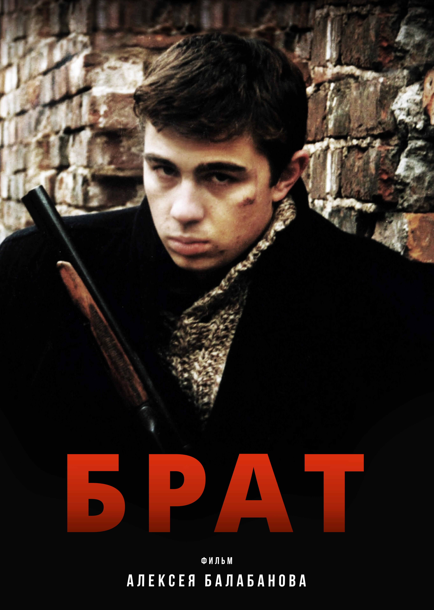
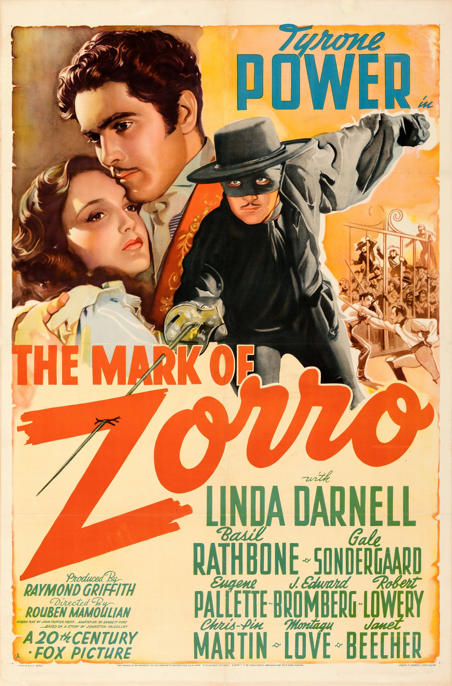
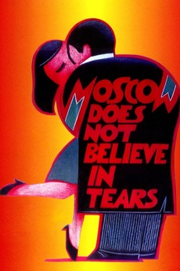
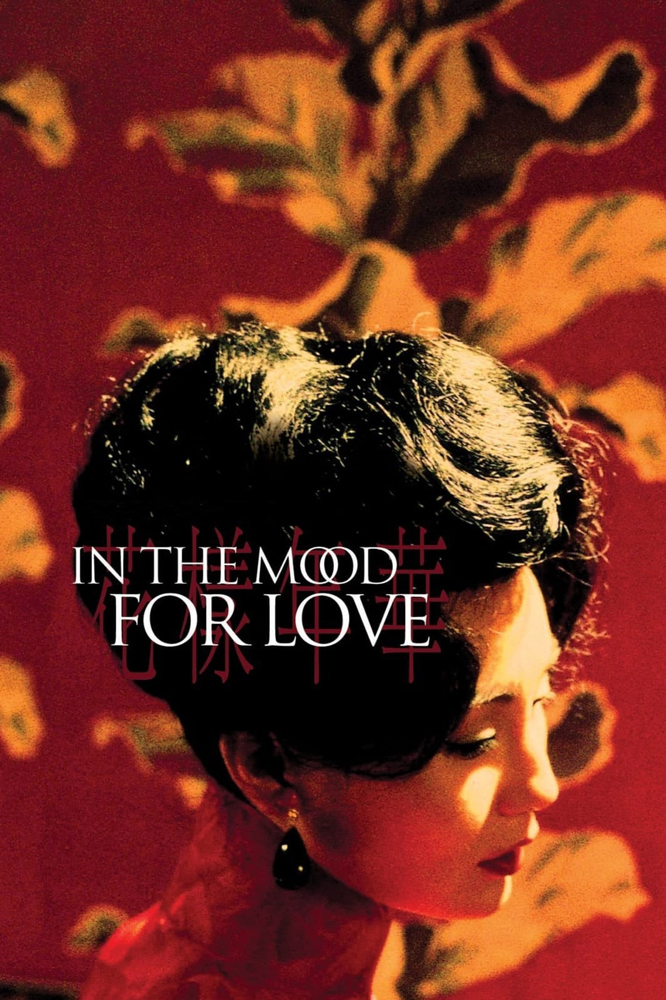

These are my top 5 favorite films. This list is impossible to make as I have way too many favorite
flicks. The movies below are some that I regularly rewatch or recommend to others.
They are not listed in any particular order.

Moonstruck I love the acting style in this film which feels more theatrical than cinematic.
This movie also does something most of Hollywood does not which is to portray older people positively.
Moonstruck does not make fun of couples in their 60s or beyond, instead it highlights their love and if anything,
makes light of the main couples relationship. The cast is impressive, the score is comforting, and the story is timeless.

Brother This is a grungy crime film created and set during Perestroika, 1990s Russia
full of political, economic, and social upheaval. The story focuses on a mysterious young man who was recently
discharged from service. He is quietly capable, efficient, and intelligent. He is a bit of a music nerd. He is
confident in himself, but open to suggestions. I like how this action film is shot completely differently from American
action movies. The story and cinematography is not concerned with showing how much of a badass the hero is.
It paints a realistic, but not exaggerated picture of a man and his surroundings.

The Mark of Zorro This is the best interpretation of the story of Zorro. Tyrone Powers delivers a
complicated performance other iterations do not. Instead of hiding his plans and deception from the audience,
Powers visibly shifts his demeanor when he gleans the gravity of his situation and subtly weaves his role as a layabout rake
instead of screaming his plan or personality to the audience. The subtlety of his performance, the writing, and
the cast has kept this movie on my top five list since childhood.

Moscow Does Not Believe in Tears This movie helped me learn about life. It has a wholesomeness that
does not sugarcoat any of the characters' situations. It highlights the power of female friendship, single motherhood, and finding love in your 40s
that many films mock or over explain. It is the only Soviet film to have won an Oscar.

In the Mood for Love Holy- the costumes, music, and frames. This film was shot so that each frame
is a piece of art. The story is both melancholy and hopeful. It weaves a romantic tale without requiring any
explicit scenes to further the plot. This may not feel significant, but it is rare for filmmakers to illustrate
such deep connection without resorting to r-rated material.
The chart compares my rating for each film with its IMDb user rating, both out of 10. Hover
over a bar to see the exact numbers.